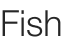
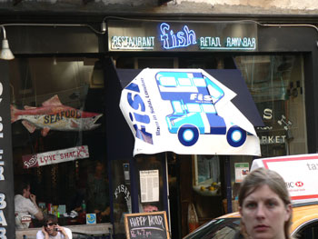

Fish
Fish on Bleecker Street has my favorite non-gay happy hour in the city. Dots introduced me to it last year, and I’ve been a few times since then.

I don’t know that girl.
The staff is the friendliest I know at any New York bar. They don’t bother you at all even if you’re taking up the best table in the joint and you’ve only spent a few dollars in two hours. And a few dollars is all you need to spend: pints of beer, including Stella Artois and Sierra Nevada, are only $2. I think a glass of wine is $2 or $3, and for $8 you can have a drink and six Blue Point Oysters. I tried this last week and made it through five oysters, foisting the last one on Jake.
I love the elegant presentation of oysters on the half shell, but sometimes I look at them and I can’t believe what I am about to eat. This French guy we were with last night inhaled six of them and told me how small they were compared to those of his native Normandy. I’m sure I never laid eyes on an oyster in my native Pittsburgh, so I couldn’t relate.
Happy hour at Fish is from noon to 7.
Comments
This place is indeed a find! I loved the $2 Heinekens I had and the delicious crab cake. Definitely going back!!
Add a comment